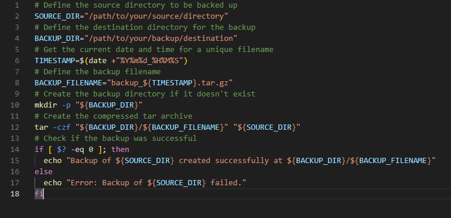
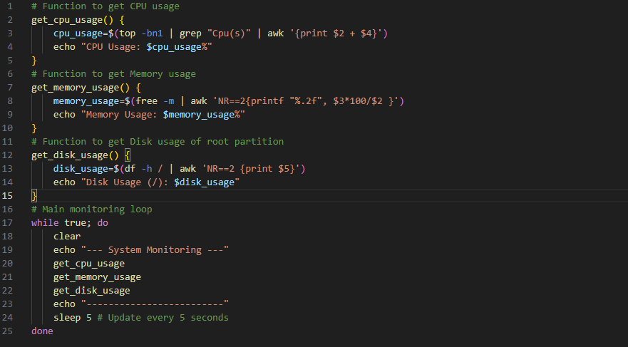
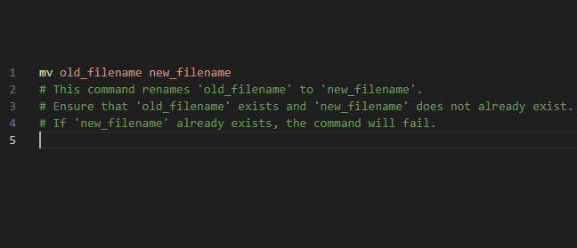

🔥 Bash Projects to Level Up Your Shell Skills
Ready to flex those Bash scripting muscles? Here are some project ideas to get you started — from automating daily tasks to building mini tools that save you time and headaches.



🚀 Project Ideas
- Automated Backup Script: Write a Bash script to back up important folders/files on a schedule. Use
rsync and cron jobs to automate backups.
- System Monitor Tool: Build a script that shows CPU load, disk usage, RAM stats, and running processes in a clean format.
- Bulk File Renamer: Create a tool that batch renames files in a folder using regex or numbering schemes.
- Log File Analyzer: Parse and summarize server log files for error counts, traffic stats, etc.
- Interactive CLI To-Do List: Use Bash to build a terminal-based to-do app with add, remove, and list features saved in a file.
📂 GitHub Repos to Check Out
- pure-bash-bible — A collection of pure bash scripts for common tasks
- what-happens-when — Illustrated explanation of what happens when you run a command
- fzf — Command-line fuzzy finder written in Bash
- tldr — Simplified and community-driven man pages
- ohmyzsh — Popular framework for managing Zsh config (super related to Bash)